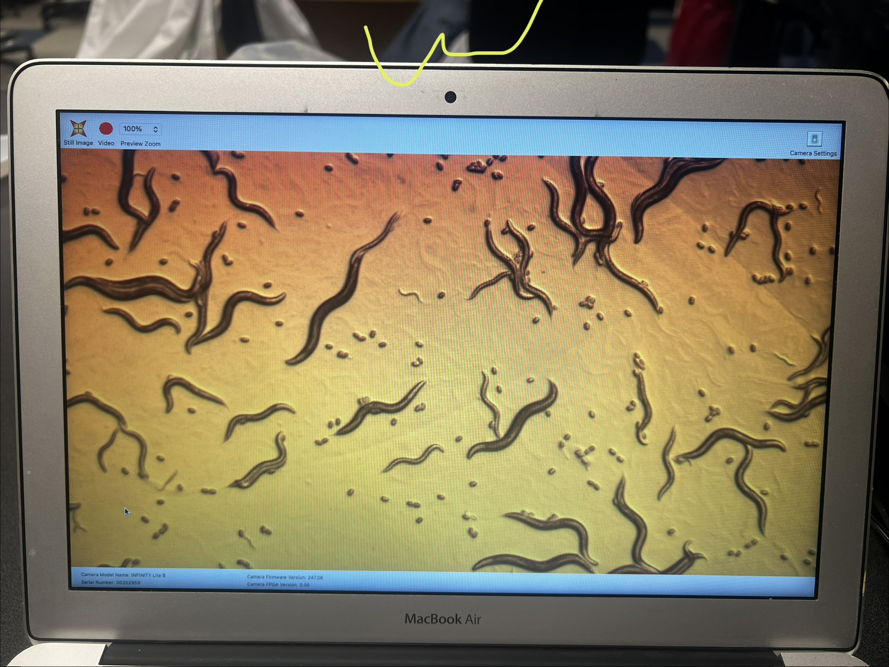
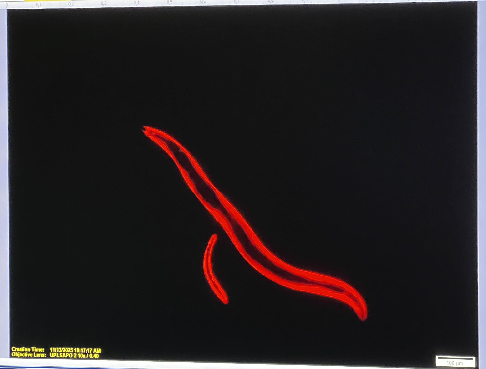
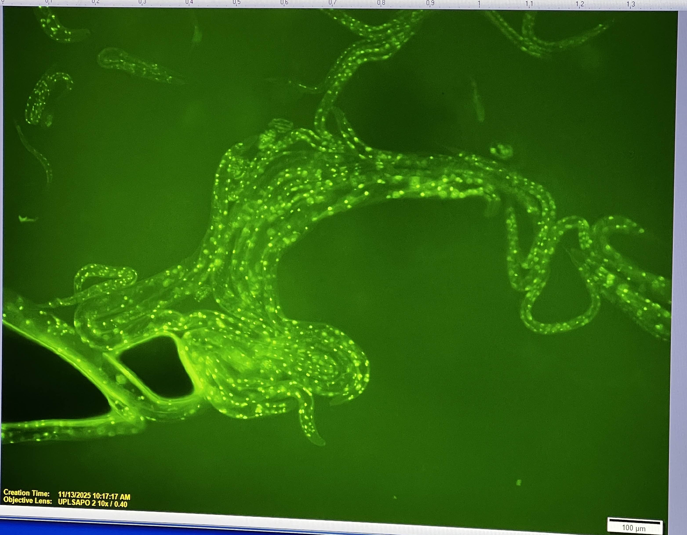

I’m a third-year Environmental Studies major with a minor in Geographic Information Systems (GIS), and I’m happiest when I’m working somewhere between a field site and a spreadsheet. My interest in the environment started in childhood, on weekend hikes where I’d pester my parents with questions about why one hillside was covered in wildflowers and the next was bare dirt. Those questions eventually turned into a degree, and I’ve been chasing the answers ever since.
My coursework covers ecology, environmental policy, hydrology, and conservation biology. Each class has taught me that environmental problems are rarely just scientific or just political. A watershed can be perfectly healthy on paper and still struggle because of a land-use decision made fifty years ago. That is why I’m drawn to work that connects data, policy, and people.
This past summer, I worked as a field research assistant on a native plant restoration project in a local watershed. My days started early. I surveyed vegetation plots, identified species, and recorded soil and moisture readings that helped the team track which restored areas were thriving. I also learned how much patience restoration takes. Some of the plantings we monitored won’t look like a mature habitat for another decade, and I found that I appreciate that kind of long-term thinking.
During the school year, I volunteer as a data coordinator for a campus sustainability group. I help organize and analyze waste-diversion numbers from across campus, then turn them into short, plain-language reports for students and administrators. Making data readable for people who don’t think about it every day has become one of my favorite parts of the work. I’ve also helped run community cleanups and a native-plant giveaway, which taught me that the best way to get people interested in conservation is to make it hands-on and a little bit fun.
I’m comfortable with ArcGIS and QGIS for mapping, Excel and R for data analysis, and a range of field methods, including transect sampling, water quality testing, and species identification. I’ve also worked on my writing and presentation skills, since I believe even the strongest research has little impact if it can’t be communicated clearly.
Where I’m Headed
After graduation, I plan to work in conservation planning or environmental consulting, ideally on projects that protect open space and improve water quality in fast-growing regions. Longer term, I’m considering graduate school to study landscape ecology. I want to help communities make land-use decisions that work for both people and the ecosystems they depend on.
Outside the Classroom
When I’m not studying or in the field, you’ll find me hiking, birdwatching, or tending a small container garden of native plants on my apartment patio. I also enjoy photography, mostly landscapes and the occasional blurry bird. I believe the best environmental work comes from people who genuinely love the places they’re trying to protect, and I try to keep that in mind in everything I do.
If you’d like to connect about research, volunteering, or internships, I’d love to hear from you.
• Volunteered in several events which involved the community of Los Angeles
• Set up barricades and tables for Los Angeles Marathon and handed out waters to runners passing by
• Set up barricades for Los Angeles China Town parade; made sure nobody crossed through
• Responsible for checking out customers
• Assisted customers to find any groceries or items
• Greeted customers brightly and made them feel welcomed
• Provided insight on certain products and compared them to the best of my capabilities
• Offered assistance to anyone who seemed distressed
• Restocked supplies onto shelves with profound efficiency
• Helped newer students understand expectations and standards
• Assisted in organizing events for the board members and providing possible sponsors
• Hosted several meetings in animal care for a variety of different topics
• Gave insight on things that could be done to help other creatures


